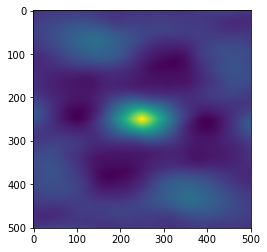
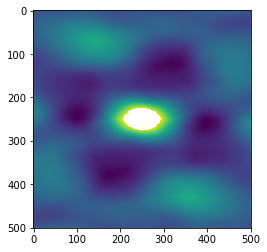
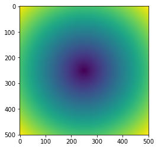

image = np.loadtxt('example.txt')
sections = np.load('example_sections.npy')Areal
Set of functions for calculating 2 Dimensional areal surface roughness parameters.
To demonstrate, we’re going to build on data we processed in data
Sa
Sa (im, norm=True, axis=None, sections=False, **kwargs)
Calculates the mean absolute difference from the mean plane. Equivalent to Ra(array, axis = None)
| Type | Default | Details | |
|---|---|---|---|
| im | Numpy array or arraylike. typically (m,n) for 1 array or (k,m,n) for k (m,n) stacked arrays | ||
| norm | bool | True | |
| axis | NoneType | None | |
| sections | bool | False | If true, calculates the Sa of the stack of images, (i.e. sets axis = (1,2)) |
| kwargs |
(Sa(image),
Sa(image,axis = (0,1)),
Sa(sections,sections=True)[:3],
Sa(sections,axis=(1,2))[:3])(0.00047688714130073284,
0.00047688714130073284,
array([0.00028241, 0.00042414, 0.00020014]),
array([0.00028241, 0.00042414, 0.00020014]))Sms
Sms (im, norm=True, axis=None, sections=False, **kwargs)
Calculates the root mean square difference from the mean plane. Equivalent to Rms(array, axis = None)
| Type | Default | Details | |
|---|---|---|---|
| im | Numpy array or arraylike. typically (m,n) for 1 array or (k,m,n) for k (m,n) stacked arrays | ||
| norm | bool | True | |
| axis | NoneType | None | |
| sections | bool | False | If true, calculates the Sms of the stack of images, (i.e. sets axis = (1,2)) |
| kwargs |
(Sms(image),Sms(sections,sections=True)[:5])(0.0006332906519311293,
array([0.00032491, 0.00049684, 0.0002654 , 0.00028618, 0.0004129 ]))Ssk
Ssk (im, norm=True, axis=None, sections=False, **kwargs)
Calculates the Skew of the section. Equivalent to Rsk(im, axis = None) for an (m,n) array
| Type | Default | Details | |
|---|---|---|---|
| im | Numpy array or arraylike. typically (m,n) for 1 array or (k,m,n) for k (m,n) stacked arrays | ||
| norm | bool | True | |
| axis | NoneType | None | |
| sections | bool | False | If true, calculates the Ssk of the stack of images, (i.e. sets axis = (1,2)) |
| kwargs |
(Ssk(image),Ssk(sections, sections = True)[:5])(0.09500122790758757,
array([-0.09524635, 0.28831296, 0.70445168, -0.75446586, -0.02569195]))Sku
Sku (im, norm=True, axis=None, sections=False, **kwargs)
Calculates the Kurtosis of the section. Equivalent to Rku(im, axis = None) for an (m,n) array
| Type | Default | Details | |
|---|---|---|---|
| im | Numpy array or arraylike. typically (m,n) for 1 array or (k,m,n) for k (m,n) stacked arrays | ||
| norm | bool | True | |
| axis | NoneType | None | |
| sections | bool | False | If true, calculates the Sku of the stack of images, (i.e. sets axis = (1,2)) |
| kwargs |
(Sku(image),Sku(sections,sections=True)[:5])(1.705202900719974,
array([-1.06809856, -0.88850324, 1.07656068, -0.61641668, -0.91538318]))array_1 = np.ones((4,4))
array_2 = np.ones((4,4)) * 2
array_3 = np.ones((4,4)) * 3
stack1232 = np.array([array_1, array_2, array_3,array_2])
stack1232array([[[1., 1., 1., 1.],
[1., 1., 1., 1.],
[1., 1., 1., 1.],
[1., 1., 1., 1.]],
[[2., 2., 2., 2.],
[2., 2., 2., 2.],
[2., 2., 2., 2.],
[2., 2., 2., 2.]],
[[3., 3., 3., 3.],
[3., 3., 3., 3.],
[3., 3., 3., 3.],
[3., 3., 3., 3.]],
[[2., 2., 2., 2.],
[2., 2., 2., 2.],
[2., 2., 2., 2.],
[2., 2., 2., 2.]]])Sp
Sp (im, norm=True, axis=None, sections=False, **kwargs)
Calculates the maximum peak height of the surface
| Type | Default | Details | |
|---|---|---|---|
| im | Numpy array or arraylike. typically (m,n) for 1 array or (k,m,n) for k (m,n) stacked arrays | ||
| norm | bool | True | |
| axis | NoneType | None | |
| sections | bool | False | If true, calculates the Sp of the stack of images, (i.e. sets axis = (1,2)) |
| kwargs |
test_eq(Sp(np.array([2,2,4,4,-6,6]), norm=False), 6)
test_eq(Sp(np.array([0,0,0,0,0,0]), norm=True), 0)
test_eq(Sp(stack1232, norm=False, sections = True), np.array([1,2,3,2]))Sv
Sv (im, norm=True, axis=None, sections=False, **kwargs)
Calculates the absolute maximum pit depth of the surface
| Type | Default | Details | |
|---|---|---|---|
| im | Numpy array or arraylike. typically (m,n) for 1 array or (k,m,n) for k (m,n) stacked arrays | ||
| norm | bool | True | |
| axis | NoneType | None | |
| sections | bool | False | If true, calculates the Sv of the stack of images , (i.e. sets axis = (1,2)) |
| kwargs |
test_eq(Sv(np.array([0,0,0,0,-5]), norm = False), 5)
test_eq(Sv(np.array([1,2,3,2,2,1]), norm = False), 1)
test_eq(Sv(stack1232, norm=False, sections = True), np.array([1,2,3,2]))Sz
Sz (im, norm=True, axis=None, sections=False, **kwargs)
Calculates the maximum height (max peak + absolute max pit) of the surface. Synonymous with the range of height values or peak to peak.
| Type | Default | Details | |
|---|---|---|---|
| im | Numpy array or arraylike, typically (m,n) for 1 array or (k,m,n) for k (m,n) stacked arrays | ||
| norm | bool | True | |
| axis | NoneType | None | |
| sections | bool | False | If true, calculates the Sz of the stack of images, (i.e. sets axis = (1,2)) |
| kwargs |
test_eq(Sz(np.array([0,0,0,5]), norm = False), 5)
test_eq(Sz(np.array([-5,-1,-1,-1]), norm = False), 4)
test_eq(Sz(stack1232, norm = False, sections = True,), np.array([0,0,0,0]))
test_eq(Sz(np.array([-5,-1,-1,-1,-1])), Sz(np.array([5,1,1,1,1])))Spatial Parameters
Autocorrelation is the delayed correlation of a signal with itself. In this case our “signal” is the height data.
To generate the autocorrelation function and visualise it we can use the scipy correlate function.
im_mean = image - np.mean(image,axis=None, keepdims = True)
im_cor = correlate(im_mean,im_mean, mode = 'same')
plt.imshow(im_cor)
plt.show()
The Spatial Autocorellation parameter is the correlation of the surface with itself, with values normalized to be in the range [-1,1].
Sal is the distance which has the fastest decay to a given parameter (s), usually 0.2.
To calculate Sal, we calculate the autocorellation function (acf), normalize the result, generate a distance matrix from the center of the array, and find the shortest distance (d) that is acf <= s.
We already have the im_cor above. So lets find the Sal step by step.
im_ncor = normalize(im_cor, axis = None, how = 'minmax') #minmax defaults to [-1,1] which is typically unusual
plt.imshow(im_ncor)
plt.show()
Lets see what values are below 0.2
plt.imshow(np.where(im_ncor <= 0.2, im_ncor, np.NaN))
plt.show()
We need to find the shortest distance from the center to the edge of this oval of NaNs. I generate a distance matrix and find the min, this might not be the fastest/most efficient solution so if you have a suggestion to improve it then raise an issue on the github!
dists = distance_matrix(im_ncor.shape)
plt.imshow(dists)
plt.show()
Now we filter the dists by the normalize correlation function and return the resulting min.
im_Sal = np.nanmin(np.where(im_ncor <= 0.2, dists, np.NaN)) #This reads: Where im_ncor is less than or equal to 0.2, return respective dist, else return NaN
print(f'The images Sal is: {im_Sal} Pixel Units')The images Sal is: 23.345235059857504 Pixel UnitsNote the use of Pixel Units, Rough can’t tell what units you are using (yet!), so be sure to convert the pixel distance to whatever unit you are using.
def Sal(im, #Numpy array or arraylike, typically (m,n) for 1 array or (k,m,n) for k (m,n) stacked arrays
norm = True, #Normalize the input array
norm_how = 'center', #How to normalize the data, see `normalize`,
axis = None,
sections = False, #If true, calculates the Sal of the stack of images, (i.e. sets axis = (1,2))
s = 0.2, #Default decay value.
scale = True, #Scale the respective array via im / np.linalg.norm(im)
**kwargs #keyword arguments to be passed to numpy.ptp
):
'''
Calculates the autocorellation length parameter. Defined as the horizontal distance of the autocorellation function
which has the fastest decay to s, with 0 <= s <= 1.
Can determine the presense of lay, the direction of the predominant surface pattern.
'''
if sections:
axis = (1,2)
if norm:
normalize(im, axis = axis, how = norm_how)
#Calculate and normalize autocorrelation results for the array to (-1,1) range
im_corr = correlate(im,im,mode = 'same')
im_norm_corr = normalize(im_corr, axis = axis, how = 'minmax')
#Find the smallest distance where autocorrelation function is <= s
dists = distance_matrix(im_norm_corr.shape)
dists_where = np.where(im_norm_corr <= s, dists, np.NaN)
return np.nanmin(dists_where)
#TODO test with stack of images
#Find the distance which is lowest that matches <= stest_eq(im_Sal, Sal(image))distance_matrix(sections.shape).shape(100, 50)a_10 = np.arange(10)
a_10array([0, 1, 2, 3, 4, 5, 6, 7, 8, 9])a_20 = np.arange(10,20)
a_20array([10, 11, 12, 13, 14, 15, 16, 17, 18, 19])np.where(a_10>=5, np.NaN, a_10)array([ 0., 1., 2., 3., 4., nan, nan, nan, nan, nan])a_16 = np.arange(16).reshape(4,4)
a_16array([[ 0, 1, 2, 3],
[ 4, 5, 6, 7],
[ 8, 9, 10, 11],
[12, 13, 14, 15]])a_dist = distance_matrix(a_16.shape)
a_distarray([[2.82842712, 2.23606798, 2. , 2.23606798],
[2.23606798, 1.41421356, 1. , 1.41421356],
[2. , 1. , 0. , 1. ],
[2.23606798, 1.41421356, 1. , 1.41421356]])a_where = np.where(a_16>=13, a_dist, np.NaN)
np.nanmin(a_where)1.0